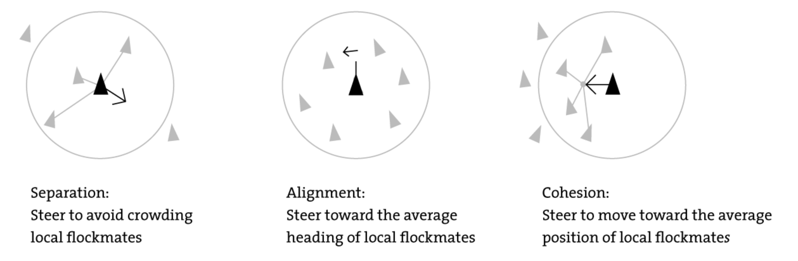

Boids Algorithm Github
Simulation of Bird Flocking Behavior
Background
Boids Algorithm (a.k.a Reynolds Flocking) is an artificial life program created to simulate the flocking behavior of birds. Originally published in a 1986 computer graphics conference, Boids has historically been used for realistic "looking" behavior in animation and video game development. However, this algorithm is a classic example of agent-based modelling, which underpins many modern autonomy engineering techniques (dynamical systems modelling, reinforcement learning, swarm robotics, etc). Agent-based modelling techniques are based on the idea of emergent behavior, which is defined as "when a complex entity has properties or behaviors that its parts do not have on their own, and emerge only when they interact in a wider whole." Given how epitomic an example of this concept Boids is, I thought it'd be interesting to implement it myself.
Implementation
Boids algorithm has three simple rules:
The simulation is initialized with a user-specified number of agents in random positions and headings. At each time step, a loop applies each of these rules to each agent, setting a weighted sum of the headings (called target vectors in the code) returned by each rule as the new heading. Once a new heading has been calculated for each agent, the simulation takes one time step forward with agents flying in their new heading at a predetermined, constant speed. This process repeats over the length of the simulation, which is rendered in a pygame window.
Takeaways
- Loop structure is important and requires some foresight. This project's git history shows some inefficient nesting, redundant calculations, and worst of all loops that shouldn't exist at all. Refining/removing these over time was a great exercise, but thinking about them more ahead of time would've definitely saved some.
- Don't underestimate the amount of necessary implementation decisions, even for a very simple algorithm. Does "local" mean within some radius or k-nearest-neighbors? Do I treat distance as a threshold (local/nonlocal) or continuous value? How should I tune commands from rules against one another? Are there additional rules I should implement, like edge avoidance? While these variations are still "boids algorithm," they can significantly impact how the system behaves.